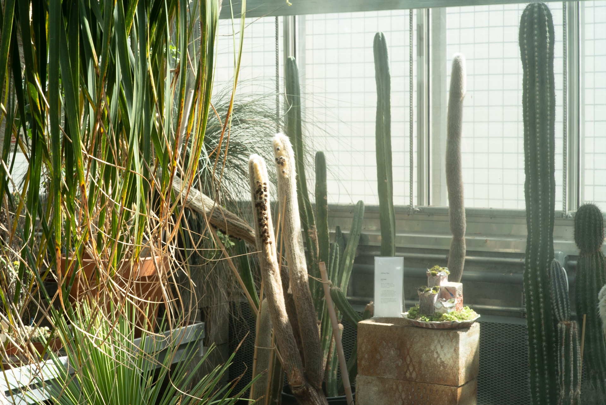
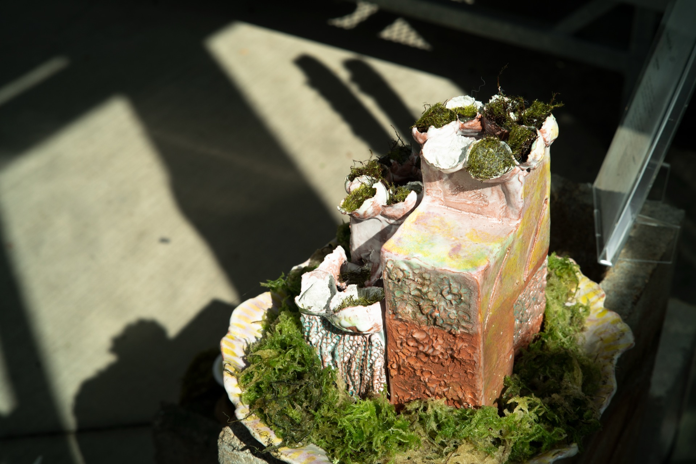
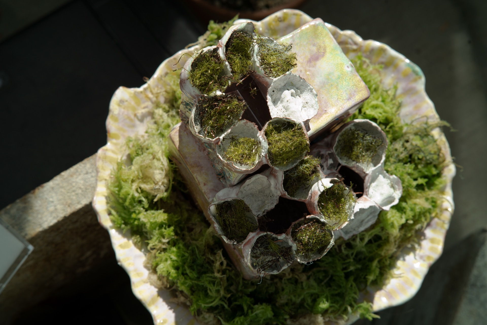
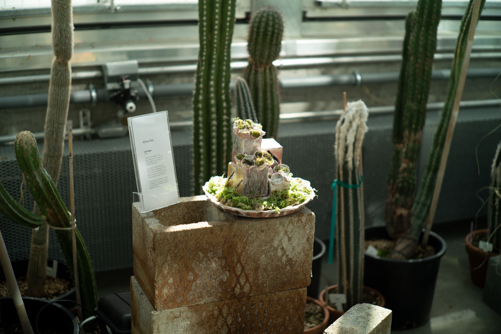

Life Scope
“Life Scope” features a set of three ceramic periscopes. These curious objects are temporarily potted among other plants in the UW bio greenhouse’s collection.
Look into the view finder for iconic miniature city scapes in captivity, as well as occassional pre-roll advertisements.
Natures are 'made' at the intersection of humans with their particular social histories (Lowe 2006). While Western scientists may view the environment as an object to extract from or protect, indigenous people co-exist with and steward the land. The borders between the natural and built environment are constantly being negotiated to reflect differently situated points of view. Life Scope challenges the audience to reflect on the normative human-environment relationships and engage with visions and scales of the otherwise.
Uncanny Garden
An Exhibition at the UW Bio Greenhouse
Works by Cristina Brambila, Laura Luna Castillo, Eunsun Choi, Stephanie Deumer, Samuel Hertz, Malio Nelson, Bria Metzger, Alex Place, Afroditi Psarra, Althea Rao, Sadaf Sadri, Maria Thraen, Xiaowei Wang, Justin Zeitlinger.
The “Uncanny Garden” proposes a re-reading of possible relationships and communications we, as humans, can build with non-human agents, through the lens of decolonization. In this exhibition, we extend our invitation to question what can be conceived as natural knowledge, and how this is confronted with a domestication of nature.
The intertwined relationship between us and plants can be traced to our ornamental garden and current greenhouses. This exhibition is a call to speculate on the multiple ways in which human and non-human agents create a system. It is also a call to look at what we might miss at first glance. What universes can we find by just lifting a stone?
Event sponsored by DXARTS and UW Department of Biology.
{kind=link}

{kind=link}

{kind=link}

{kind=link}
